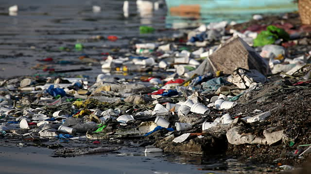
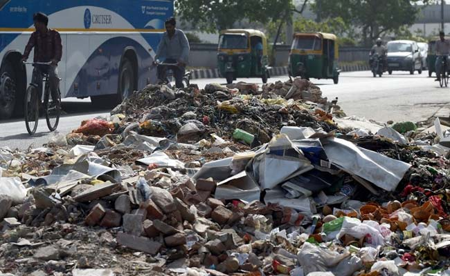

In America alone, more than 250 million tons of trash is produced each year, some of which is discarded as litter along roads, on city streets, in parks and across the nation's waterways. Littering not only diminishes the physical beauty of the world we live in, but it also poses some major problems for the people, plants and animals who are affected by it.
Pinning down the exact amount of trash that can be found in the world's oceans is difficult. In terms of just plastic litter, conservative estimates put the total amount at roughly 300 billion pounds.
All of the trash found along roadsides needed help to get there. While some of it comes from walkers and cyclists, motorists account for 53% of all litter produced annually.
Litter significantly depreciates the value of a home. So says research by advocacy groups like Keep America Beautiful. They report that there are economic, environmental and even social repercussions from trash on streets and sidewalks. But in the gold-rush town that is contemporary Brooklyn, all bets are off. In Greenpoint, the long-grubby Brooklyn neighborhood of working-class family homes and industrial workshops, there have historically been few street-corner trash cans and persistent heaps of commercial trash dumped on quiet blocks. And yet the sale price per square foot there rose from $539 in 2011 to $914 in 2014.
The Environmental Crimes Task Force of Central Ohio is made up of representatives from Franklin County Public Health, the Franklin County Prosecutor’s Office, the Franklin County Sheriff’s Office and the City of Columbus Division of Refuse and is funded by the Solid Waste Authority of Central Ohio (SWACO). The unit works together to investigate reports of littering and illegal dumping. Trash and tire piles present the ideal living and breeding environment for rats, mice and other rodents, ticks, flies and mosquitoes that, in many cases transmit disease. In addition, illegally dumped material presents the risk of physical injury resulting from contact with broken glass, sharp metal, biological and chemical waste.
Many materials that are illegally dumped contain toxic or hazardous substances that can threaten surface or groundwater supplies. Trash and especially tires that catch fire can cause air pollution that may harm the health of persons exposed to the fumes while also damaging the environment. Decaying garbage and yard waste dumped in residential areas create unpleasant odors and can contribute to the impression that the entire neighborhood is in decline, thus negatively impacting property values. Research has shown that such conditions also lead to higher crime rates.
Often the property owners are unaware that the dumping is occurring on their property. However, the property owner is ultimately responsible for proper disposal of any solid waste deposited on his/her property.
Last year, United States taxpayers spent nearly $11 billion cleaning up litter across the U.S., ten times more than the cost of trash disposal.
In 2015, the North Carolina Department of Transportation spent more than $15 million to remove approximately 7.5 million pounds of roadside litter.
The estimated cost of litter pickup is 30 cents per piece of litter.
One mile of highway contains approximately 16,000 pieces of litter.
Thousands of accidents across the United States are litter-related, causing insurance rates to rise.
$90 million worth of cans, bottles and newspapers in a landfill would be valued at $300 million if those items were recycled. Litter reduces property values.
Tourism declines when vistas are spoiled by litter.
60% of deliberate littering is done by pedestrians and 40% is done by motorists. Plastic bags can last up to 1,000 years in a landfill and a glass bottle can be around for a million years.